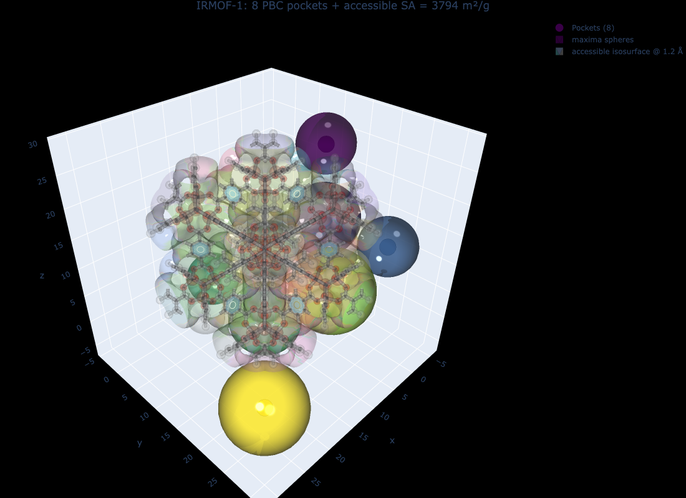

Surface Area & Void Volume — MC Shell Estimator + Window Fingerprints
Compute accessible surface area, void volume, and per-pocket/per-region breakdowns with the Monte-Carlo shell estimator, compare against marching-cubes mesh, and explore how window fingerprinting affects accessibility.
Overview
Once you have a periodic segmentation (seg dict from do_periodic_segmentation_rust), the next quantity of interest is the probe-accessible surface area and void volume at a chosen probe radius. mofography ships two complementary estimators that share the same percolation analysis pipeline:
Mesh (marching-cubes) — compute_surface_area_mesh_winding. Deterministic; tessellates the level set dgrid = r_probe with skimage.measure.marching_cubes, then measures the mesh area with trimesh. Excellent as a reference, slow on large grids.
Monte-Carlo shell — compute_surface_area_mc_winding. Statistical; samples N random points in the unit cell, counts how many land in a thin shell of thickness δ around the probe surface, and reports SA = V_cell · p_shell / δ. Fast, parallelisable, and tunable for precision.
This tutorial covers:
The full dgrid → seg → SA / void volume pipeline on IRMOF-1.cif.
The Monte-Carlo shell estimator: signature, returned dict, per-region / per-pocket / per-cluster breakdowns.
A side-by-side MC shell vs. marching-cubes mesh comparison.
Void volume via the same accessibility analysis — global, per-region, per-pocket, and a point-probe reference for sanity.
The role of window fingerprinting (window_fp=True) on accessible SA: where the two accessibility modes disagree and why.
A 3-D figure of the unit cell with a translucent dgrid isosurface and the pocket maxima.
The mesh method is exact (modulo tessellation) but two artifacts creep in on coarse grids:
Blocky isosurface — coarse dgrid spacing produces low-poly surfaces; mesh area underestimates the true value.
Region-boundary triangles dropped — faces that straddle region boundaries disappear when the per-region submeshes are built, leading to systematic undercount of surface area at the interfaces between pores.
The MC shell estimator does not build a mesh at all. It directly measures the volume of the thin band around the isosurface — a quantity that is mathematically well-defined even when the discrete mesh is imperfect. In practice the MC shell agrees with Zeo++ better than the marching-cubes mesh does, and the noise floor is set by n_samples (∝ 1/√N).
Imports and structure
Show code
import osos.chdir("/Users/arungopalan/repos/mofography/docs")import mofography as mgrfrom ase.io import readimport numpy as npimport plotly.graph_objects as goimport plotly.express as pximport logging# Silence the chatty segmentation loggerlogging.getLogger("mofography").setLevel(logging.WARNING)
Step 1: Load IRMOF-1 and compute the distance grid
IRMOF-1 is a clean test case: 424 atoms, ~26 Å cubic cell, two cage families, no disordered atoms. The defaults of do_periodic_segmentation_rust produce 8 PBC-grouped pockets.
Show code
atoms = read("IRMOF-1.cif")print(f"IRMOF-1: {len(atoms)} atoms, cell = {atoms.cell.cellpar()[:3].round(2)} Å")spacing =0.5# Å — see dgrid_methods.qmddgrid = mgr.dgrid_from_atoms_rust(atoms, spacing=spacing)dgrid = dgrid.astype(np.float32) # cast to float32 — required by do_periodic_segmentation_rustprint(f"dgrid: shape={dgrid.shape}, void max = {dgrid.max():.1f} Å")
IRMOF-1: 424 atoms, cell = [25.83 25.83 25.83] Å
dgrid: shape=(52, 52, 52), void max = 7.5 Å
Step 2: Periodic segmentation + percolation history
A single call to do_periodic_segmentation_rust returns a seg dict containing everything the SA / void-volume routines need: the dgrid, the regions_pbc and pbc_groups from the PBC merge, the connections list, and the percolation_history (computed automatically here because compute_connections=True and the percolation stage is on by default).
get_pore_dia_mgr is the single-call helper that returns the three standard diameters. We do this before SA so we can sanity-check the probe radius we feed into the SA routines — it should be smaller than the PLD, otherwise no pocket percolates and accessible SA drops to zero.
Show code
lcd, pld, dfsd, _ = mgr.get_pore_dia_mgr(atoms, dgrid=dgrid, kwargs={})print(f"LCD (largest cavity diameter): {lcd:.2f} Å")print(f"PLD (pore-limiting diameter): {pld:.2f} Å")print(f"DFSD (dominant framework-solvent): {dfsd:.2f} Å")probe_radius =1.2# helium — well below the PLD, so all pockets percolateprint(f"\nChosen probe_radius = {probe_radius} Å → probe < PLD ✓")
LCD (largest cavity diameter): 15.08 Å
PLD (pore-limiting diameter): 7.89 Å
DFSD (dominant framework-solvent): 15.08 Å
Chosen probe_radius = 1.2 Å → probe < PLD ✓
Step 4: Monte-Carlo shell surface area
The signature is:
compute_surface_area_mc_winding( results_dict, mat_atoms, probe_radius=None, # default: helium radius (1.2 Å) n_samples=20_000, # MC sample count shell_thickness=0.5, # half-width of the band around the probe surface (Å) return_details=False, window_fp=True, # window-fingerprint rescue on accessible side winding_kwargs=None,)
It returns a dict with:
Key
Meaning
total_surface_area
SA over all regions at the probe radius (m²/g), MC estimate.
accessible_surface_area
SA restricted to percolating regions only (m²/g).
accessible_fraction
accessible / total.
by_region
{region_id → SA (m²/g)} for the accessible fragment regions.
by_pocket
{pocket_id → SA (m²/g)} — sums by_region over each PBC pocket.
by_percolated_cluster
{cluster_label → SA (m²/g)} — per percolated cluster at the chosen threshold.
sa_mc = mgr.compute_surface_area_mc_winding( seg, atoms, probe_radius=probe_radius, n_samples=20000, shell_thickness=0.5)print("="*60)print("MC SHELL SURFACE AREA (IRMOF-1, He probe)")print("="*60)print(f" total_surface_area: {sa_mc['total_surface_area']:>10.1f} m²/g")print(f" accessible_surface_area: {sa_mc['accessible_surface_area']:>10.1f} m²/g")print(f" accessible_fraction: {sa_mc['accessible_fraction']:>10.4f}")print(f" probe_radius: {sa_mc['probe_radius']:>10.2f} Å")print()print(" sa_mc_diagnostics:")for k, v in sa_mc['sa_mc_diagnostics'].items():print(f" {k:>26s}{v}")
============================================================
MC SHELL SURFACE AREA (IRMOF-1, He probe)
============================================================
total_surface_area: 3794.0 m²/g
accessible_surface_area: 3794.0 m²/g
accessible_fraction: 1.0000
probe_radius: 1.20 Å
sa_mc_diagnostics:
n_samples 20000
shell_thickness 0.5
n_shell_hits_total 2251
n_shell_hits_accessible 2251
The diagnostic n_shell_hits_total is the raw number of n_samples=20000 random points whose interpolated distance from the framework lies within shell_thickness/2 of the probe radius. It is the MC count that gets converted to a surface area. With 20000 samples you expect a few-percent statistical error on total_surface_area.
Per-pocket breakdown
by_pocket is the most useful field for a structural-chemistry report: it gives one SA number per PBC pocket. We sort by descending area and print a small table.
Show code
print("Accessible SA per pocket (sorted, top 10):\n")print(f" {'pocket':>8s}{'SA (m²/g)':>12s} bar")for pid, area insorted(sa_mc['by_pocket'].items(), key=lambda kv: -kv[1])[:10]: bar ="█"*int(area /5)print(f" {int(pid):>8d}{area:>12.2f}{bar}")
Accessible SA per pocket (sorted, top 10):
pocket SA (m²/g) bar
7 665.76 █████████████████████████████████████████████████████████████████████████████████████████████████████████████████████████████████████
8 633.73 ██████████████████████████████████████████████████████████████████████████████████████████████████████████████████████████████
2 620.25 ████████████████████████████████████████████████████████████████████████████████████████████████████████████████████████████
6 574.74 ██████████████████████████████████████████████████████████████████████████████████████████████████████████████████
3 352.26 ██████████████████████████████████████████████████████████████████████
1 332.04 ██████████████████████████████████████████████████████████████████
5 316.87 ███████████████████████████████████████████████████████████████
4 298.33 ███████████████████████████████████████████████████████████
Per-region and per-cluster breakdowns
The same numbers are available at finer and coarser granularity.
Show code
print(f"\nby_region — {len(sa_mc['by_region'])} accessible regions:")for rid, area insorted(sa_mc['by_region'].items(), key=lambda kv: -kv[1])[:5]:print(f" region {rid:>3d}{area:>8.2f} m²/g")print(" ...")print(f"\nby_percolated_cluster — {len(sa_mc['by_percolated_cluster'])} percolated clusters:")for cid, area insorted(sa_mc['by_percolated_cluster'].items(), key=lambda kv: -kv[1])[:5]:print(f" {cid:<22s}{area:>10.2f} m²/g")print(" ...")
by_region — 27 accessible regions:
region 20 340.46 m²/g
region 7 325.29 m²/g
region 12 311.81 m²/g
region 2 308.44 m²/g
region 4 298.33 m²/g
...
by_percolated_cluster — 20 percolated clusters:
axis_x_cluster_0 3793.98 m²/g
axis_x_cluster_1 3793.98 m²/g
axis_x_cluster_2 3793.98 m²/g
axis_x_cluster_3 3793.98 m²/g
axis_x_cluster_4 3793.98 m²/g
...
Step 5: Mesh surface area (marching-cubes reference)
For a head-to-head comparison we run the mesh method on the sameseg dict, same probe radius, same accessibility mode. The two should agree to within a few percent on a clean MOF; the disagreement quantifies how much the mesh is missing at region interfaces.
For IRMOF-1 the mesh returns a lower accessible SA than the MC shell — typical when the segmentation includes regions where the marching-cubes tessellation drops triangles at the boundary between percolating and non-percolating regions.
Step 6: Void volume
compute_void_volume_from_results_winding reuses the same percolation_history and pbc_groups machinery. The output dict mirrors the SA dict but with two extra completeness fields: complete_pockets and incomplete_pockets — a pocket is complete if every region in its PBC group percolates, and incomplete otherwise (in which case its accessible volume is partial and the function reports it separately under flagged_incomplete_pockets).
total_void_volume and accessible_void_volume agree to within numerical noise → every pocket percolates at the helium probe, so the whole void is probe-accessible.
point_probe_reference.void_volume_fraction = 0.68 is the geometric void fraction measured at the helium probe without any accessibility filter — a useful sanity check that the framework is correctly built.
complete_pockets = num_pockets = 8 — no partial pockets at this probe.
Per-pocket void volume
Show code
print("Accessible void volume per pocket (sorted):\n")print(f" {'pocket':>8s}{'V (cm³/g)':>12s} bar")for pid, vol insorted(vv['by_pocket'].items(), key=lambda kv: -kv[1])[:10]: bar ="█"*int(vol *100)print(f" {int(pid):>8d}{vol:>12.4f}{bar}")
window_fp=True (the default) lets the winding accessibility logic rescue watershed regions that are visually accessible but lie behind a sub-probe window. The mechanism is: if the window’s direction-invariant shell fingerprint matches a reference open window (e.g. a window of the same size on a different edge of the same region), the downstream region is treated as percolating. Setting window_fp=False disables that rescue and falls back to strict winding-only percolation.
The impact is structure-specific. On IRMOF-1 (a clean, symmetric framework) the difference is small; on more irregular MOFs with sub-probe windows it can flip the accessibility of an entire pocket.
When to flip window_fp. Default to True: it is the right choice for the majority of MOFs and matches what users see in the interactive app. Set it to False only when you are explicitly testing the strict-winding accessibility bound, or when you suspect the fingerprint matcher is over-percolating an irregular MOF (compare by_pocket between the two settings and look for newly-appearing pockets).
Step 8: MC shell-thickness sweep — bias and variance
The expected value of the MC estimator is independent of shell_thickness in the small-δ limit, because p_shell scales linearly with δ and the 1/δ factor cancels. The variance, however, scales with 1/δ: thicker shells contain more samples and the estimate is less noisy. A sweep across δ is a useful diagnostic — agreement to within a few percent confirms the shell-thickness bias is small.
For IRMOF-1 all four rows should agree within ~3% — the MC noise level for 40 000 samples. If they do not agree, one of two things is happening:
δ is comparable to the probe radius → the shell is sampling curvature that the small-δ approximation cannot resolve. Drop δ to 0.5 or below.
A real feature is being washed out by the shell (e.g. a 1-Å window at a 1.2-Å probe with δ=1.0). Drop δ to 0.3 and re-check.
Step 9: Visualize the accessible pockets
plot_maxima returns a tuple(Scatter3d, Mesh3d) when show_spheres=True — we unpack it and add both traces to a go.Figure. plot_surface_dgrid returns a single Mesh3d trace; we add it directly. Passing select= with the accessible region labels (the keys of by_region) trims the isosurface to the accessible domains, so a blocked pocket would not be drawn.
Show code
n_pockets =int(seg["regions_pbc"].max())unit_cell_maxima = seg["all_maxima"][:n_pockets]# Pore maxima as spheres (sphere opacity = 0.6, colour ~ pore radius)scatter_tr, mesh_tr = mgr.plot_maxima( dgrid, unit_cell_maxima, atoms, show_spheres=True, sphere_opacity=0.6, name=f"Pockets ({n_pockets})",)# Translucent dgrid isosurface at the probe radius, trimmed to the accessible regions.# `by_region` holds the accessible region labels of the un-merged `seg["regions"]`# (labels of the PBC-merged array would also pull in partial pores).accessible_labels =list(sa_mc["by_region"])surf_tr = mgr.plot_surface_dgrid( dgrid, probe_radius, atoms, region_labels=seg["regions"], select=accessible_labels, opacity=0.35, cscale=px.colors.qualitative.Pastel, stylize=True, name=f"accessible isosurface @ {probe_radius} Å",)# Faint frameworkfw_atoms = mgr.update_with_covalent_bonds(atoms)framework_trs = mgr.plot_framework_as_mesh( fw_atoms, stylize=True, kwargs_frame_mesh={"opacity": 0.15},)fig = go.Figure(data=[scatter_tr, mesh_tr, surf_tr, *framework_trs])fig.update_layout( scene_aspectmode="data", title=dict( text=f"IRMOF-1: 8 PBC pockets + accessible SA = {sa_mc['accessible_surface_area']:.0f} m²/g", x=0.5, xanchor="center", ), paper_bgcolor="black",)fig.write_image("tutorial_images/surface_area_pockets.png", width=1100, height=800) # static preview for the docs
No node props provided, using default set: [position, scaled_position, element and atomic_number]
No edge properties provided. Use the default set: [bond_order, bond_type]

IRMOF-1: PBC pockets inside the probe-radius isosurface
NoteInteractive version
# build `fig` as above, then:fig.show() # rotatable Plotly figurefig.write_html("surface_area_pockets.html")
You should see one sphere per PBC pocket (eight for IRMOF-1) sitting inside a translucent isosurface at the probe radius. The two cage families — small and large — are visually obvious in the cube.
Step 10: Bar chart of accessible SA per pocket
A quick sanity plot. Sorted descending, the bar chart should show all eight pockets contributing roughly the same area (the framework is highly symmetric).
Show code
pockets =list(sa_mc["by_pocket"].keys())areas = [sa_mc["by_pocket"][p] for p in pockets]order = np.argsort(areas)[::-1]pockets_sorted = [int(pockets[i]) for i in order]areas_sorted = [areas[i] for i in order]fig2 = go.Figure( go.Bar(x=pockets_sorted, y=areas_sorted, marker_color="steelblue", name="Accessible SA per pocket", hovertemplate="Pocket %{x}<br>SA = %{y:.1f} m²/g<extra></extra>"))fig2.update_layout( title="IRMOF-1: accessible SA per PBC pocket (He probe)", xaxis_title="PBC pocket id", yaxis_title="Accessible SA (m²/g)", template="plotly_white", showlegend=False,)fig2.show()
count random samples in a thin shell around the isosurface
marching-cubes tessellation of the isosurface, then mesh area
Determinism
stochastic (set np.random.seed for reproducibility)
deterministic
Speed on IRMOF-1 (52³ grid, 20k samples)
~1 s
~3 s
Bias from grid resolution
low (shell sampling smooths over 1-voxel artefacts)
visible at coarse spacing (blocky surfaces, dropped boundary triangles)
Tunable knobs
n_samples, shell_thickness
step_size (marching cubes)
Best for
high-throughput screening; large grids; noisy materials
small grids where you need a reference; per-region sub-mesh visualisation
Output dict
identical keys
identical keys
Decision flow
flowchart TD
A[seg dict + probe_radius] --> B{Need per-region<br/>SA breakdown?}
B -- Yes --> C[MC shell<br/>by_region, by_pocket]
B -- No --> D{Need fast number<br/>for one structure?}
D -- Yes --> E[MC shell<br/>n_samples=20k]
D -- No, exact --> F[Mesh]
A --> G{Window FP<br/>rescue needed?}
G -- Yes --> H[window_fp=True<br/>(default)]
G -- No, strict --> I[window_fp=False]
A --> J{Plotting +<br/>region colours?}
J -- Yes --> K[Mesh]
J -- No --> L[MC shell]
Common pitfalls
Symptom
Likely cause
Fix
accessible_surface_area = 0 at small probe
probe > PLD; nothing percolates
drop probe_radius until it sits well below the PLD
MC and mesh disagree by >10%
shell thickness is too small (δ << spacing) or mesh has resolution artefacts
raise n_samples to 50 000+ and re-sweep δ ∈ {0.3, 0.5, 0.7}
Mesh misses a region boundary
sub-mesh tessellation drops boundary triangles; this is a real estimator bias
use MC shell; cross-check the accessible_fraction
Accessible SA jumps when you turn window_fp off
a pocket sits behind a sub-probe window that the fingerprint would normally rescue
either is defensible — interpret as a strict bound; document the choice
by_percolated_cluster keys look like axis_x_cluster_0
cluster labels carry the axis they were detected on; the same percolating region can appear under multiple axes
group / deduplicate by cluster id when reporting
point_probe_reference.void_volume_fraction looks very different from accessible_void_volume / cell_volume
the point-probe reference uses a different (purely geometric) convention
use the accessible numbers for the screening-quality value; the point-probe number is a consistency check
What’s in the output dict
A single call to compute_surface_area_mc_winding(seg, atoms, probe_radius=1.2) gives you this:
MC sample count. 20 000 is the default; 50 000+ for sub-percent noise.
shell_thickness
Half-width of the MC band around the isosurface. 0.5 Å is the canonical default; sweep {0.3, 0.5, 0.7} to confirm bias is small.
window_fp=True
Use window-fingerprint rescue on the accessible side. Default; flip to False for a strict-winding bound.
by_region / by_pocket / by_percolated_cluster
Three granularities of accessible SA / void volume for a single MOF.
Key takeaways:
The MC shell estimator is the right default for high-throughput screening — n_samples=20 000 is fast, gives few-percent accuracy, and does not suffer from mesh artefacts.
A shell-thickness sweep at fixed n_samples is the simplest bias diagnostic: if δ=0.3 and δ=0.7 agree to within a few percent, the bias is small.
window_fp=True (default) is the more permissive accessibility mode; switch to False only when you want the strict-winding bound.
Always sanity-check with the point-probe reference in the void-volume output — it catches segmentation / dgrid mistakes that would otherwise pass unnoticed.
Next steps
Connections and Windows — how to extract the per-window sizes that the SA routines use implicitly.
Window fingerprinting — the direction-invariant shell fingerprint matcher that powers window_fp=True.
Pockets detection — classify each pocket as cage / channel / dead-end; combine with by_pocket SA for chemistry-aware ranking.